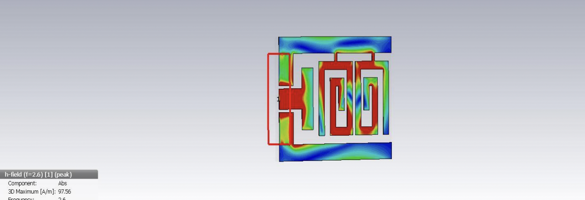
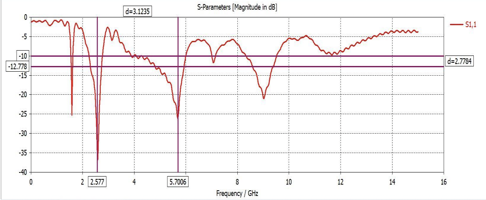

We built the cells that can power wearables, and we figured there is no way wearables can communicate over small distances. The given antennae which was later fabricated in Taiwan took 257 iterations to develop, each one taking 2 hours to get the required S values in the desired bandwidth.
Its a fun experiment to allow wearables to talk with each other in-situ!
We built the cells that can power wearables, and we figured there is no way wearables can communicate over small distances. The given antennae which was later fabricated in Taiwan took 257 iterations to develop, each one taking 2 hours to get the required S values in the desired bandwidth.
Why so many iterations? Thats where magic comes in, CRLH antennae being designed till now all had parallel designs, that thing pinched me a little, why not use anti parallel designs? Designs that can drive the electromagnetic radiation in two different directions to increase oscillation. Using a via, we made possible designs for am antennae that can communicate in the desired range with over 400 hours worth of work. Now your wearables can talk both outside and inside the body
Starting iteration 50: parallel designMeta-materials: composite material with simultaneous negative values of permittivity and permeability. When we were about to give up beleiving it cannot be done, but giving up is nor easy not fun :)
Antennae finally designed over a coffee bThe last antennae with anti parallel design and desired efficiency: iteration 257, time taken - 400+ hoursSince the design is Asymmetrical Coplanar waveguide based it helps in variations of design and increase of efficiency in radiation which can be further improved using SRRs (circular or square based). The geometry of the SRR parameters determines resonance oscillating current induced by the emf produced between the two rings.
The requisite frequency range for the same was 4.3 to 5.2 GHz as well as to work between 2.6 and 3 GHz. The efficiency is taken upto 83% in anti parallel design